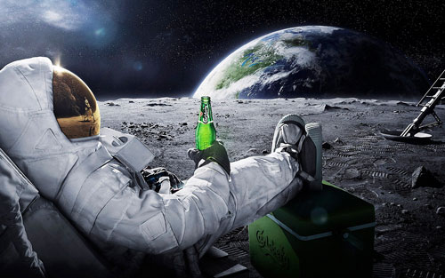

Нашата мисия
Годината е 2115 (краят на света никога не идва навреме). Учените от Националната Астробиологическа Институция за Широкоспектърно-Космическа Валидация на Организми (НАИШ-КВО) са открили нещо, което наричат “интересна планета”. Интересното на планетата е, че в атмосферата ѝ има газове, които типично се произвеждат от живи организми. НАИШ-КВО решават да пратят екип от астронавти, заедно с няколко програмисти в наше лице, които да посетят планетата и да изследват ситуацията там - независимо какво ще струва това.
Когато достигнахме планетата след достатъчно дълго пътуване, за да изгледаме How I Met Your Mother, Дързост и Красота, както и израстването на едно цвете (последното не е филм), ние слязохме от Галактическия Обект за Транспорт на други Обекти (GOTO) и започнахме да изследваме планетата. Откритията ни показват, че няма достатъчно висши форми на живот, за да има с кого да си пием Бързия Интоксикант за Рехабилитация и Активизация (БИРА), но за сметка на това големи области от планетата са покрити от водоподобна слуз, в която по особено интересен начин живеят малки организми. Тези организми изглежда имат доста силен потенциал за развитие. Още повече, изследванията показват, че тези организми, докато са активни, могат да бъдат ползвани за произвеждане на Живо Извлечение с Вискозитет Алфа от Бързия Интоксикант за Рехабилитация и Активизация (ЖИВАБИРА). За съжаление организмите са твърде малко към този етап. Затова ги наричаме “водонедорасли”. Със сегашното темпо на развитие, няма да доживеем да създадем ЖИВАБИРА от водонедорасли.
